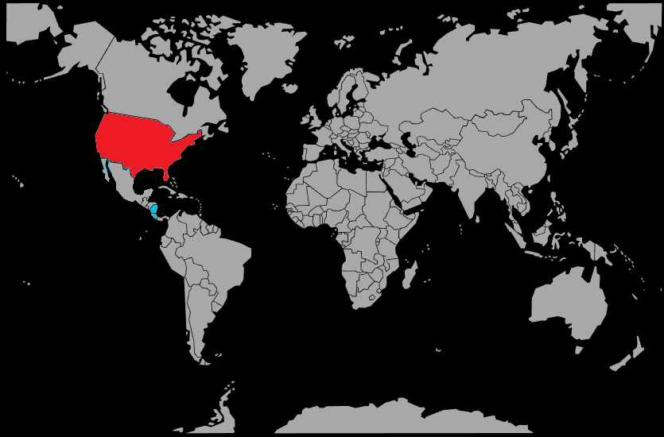

Systématique
- Ordre : Cichliformes
- Famille : Cichlidae
- Genre : Amphilophus
- Espèce : Amphilophus citrinellus
Amphilophus citrinellus est un grand cichlidé d’Amérique centrale, massif et puissant, souvent connu en aquariophilie pour ses formes sélectionnées au corps orangé. [web:96][web:99]
En aquarium, les mâles peuvent dépasser 25 cm, parfois 30 cm, et nécessitent des bacs très spacieux et solidement aménagés. [web:93][web:102]
C’est une espèce très territoriale et agressive, surtout en période de reproduction; tout poisson plus petit ou moins robuste risque d’être attaqué et considéré comme une proie. [web:99][web:93]
La maintenance spécifique est souvent recommandée, ou la cohabitation avec un seul partenaire de taille comparable, dans un décor composé de grosses pierres et de racines bien calées. [web:99][web:102]
Mode : pondeur sur substrat découvert; le couple nettoie une grande pierre plate ou une surface dure, où la femelle dépose plusieurs centaines d’œufs. [web:99][web:102]
Les deux parents assurent une garde très agressive de la ponte, des larves et des alevins, qui peuvent rester longtemps sous leur protection; la reproduction est réputée facile une fois un couple formé. [web:99][web:102]
Dimorphisme sexuel : les mâles sont plus grands, plus massifs et développent souvent une bosse nucale marquée, tandis que les femelles restent plus petites et plus trapues. [web:96][web:102]
Espérance de vie : Amphilophus citrinellus peut vivre 15 à 20 ans en captivité, ce qui en fait un poisson de long terme nécessitant un engagement important. [web:102][web:96]
L’espèce est originaire du bassin du río San Juan et de lacs du Nicaragua et du Costa Rica, où elle fréquente des eaux variées, depuis les zones rocheuses jusqu’aux secteurs plus vaseux. [web:96][web:102]
Répartition
Origine naturelle :
- Lacs et rivières du Nicaragua.
- Bassin du río San Juan et plans d’eau voisins au Costa Rica.
Amphilophus citrinellus est endémique de cette région d’Amérique centrale, où il occupe divers habitats littoraux. [web:96][web:102]
Paramètres de maintenance
Température : 23 à 28 °C, avec une tolérance jusqu’à environ 30 °C. [web:93][web:99][web:102]
pH : 7,0 à 8,0, eau neutre à alcaline. [web:93][web:102]
GH : 10 à 20 °dGH, voire plus, eau dure. [web:93][web:102]
Courant : faible à modéré, avec une filtration très puissante et des changements d’eau réguliers pour un grand cichlidé pollueur. [web:93][web:102]
Volume conseillé : au minimum 600 L pour un couple, avec une façade de 200 cm ou plus. [web:93][web:99][web:102]
Régime alimentaire
Régime : omnivore à forte tendance carnivore; il consomme végétaux, mollusques, invertébrés et petits poissons. [web:96][web:99]
En aquarium, il accepte granulés, sticks pour grands cichlidés, morceaux de crevettes, de poisson et aliments végétaux (légumes, granulés riches en fibres). [web:93][web:99]
Des rations variées mais modérées sont essentielles pour limiter l’obésité et la pollution organique importante générée par ce grand cichlidé vorace. [web:93][web:102]